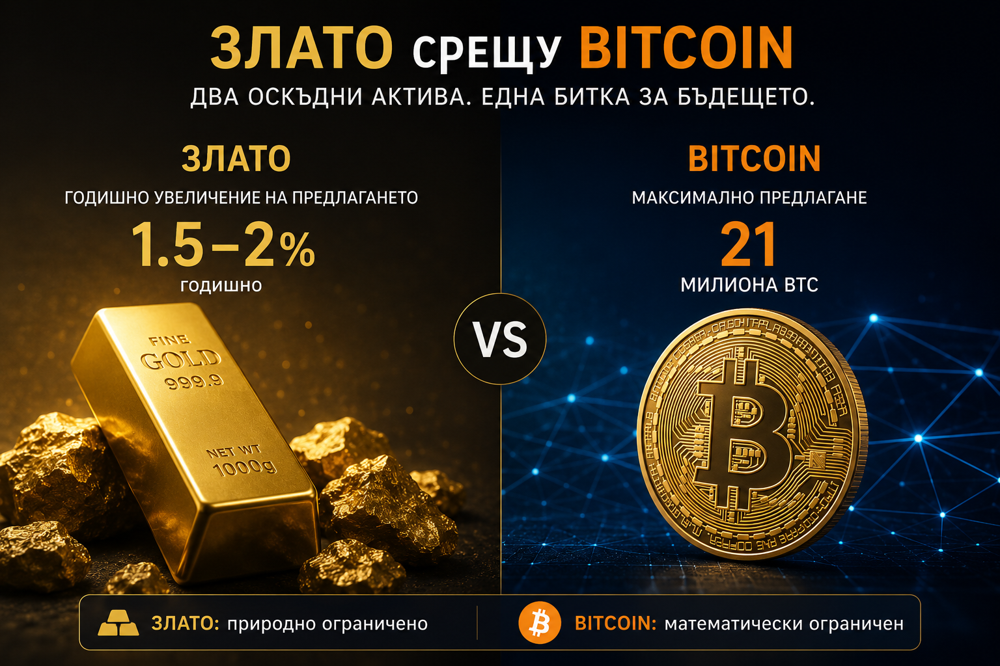

Злато срещу Bitcoin: започна ли най-голямата битка за съхранение на богатство през XXI век?
Преди повече от пет хиляди години първите цивилизации започват да използват златото като средство за съхранение на богатство. От Египет и Римската империя, през златния стандарт на XIX век, до резервите на съвременните централни банки, жълтият метал остава един от малкото активи, преживели практически всяка финансова система, всяка война и всяка валутна реформа. През цялата човешка история никога не е съществувал реален конкурент на неговата функция като универсално убежище за капитала.
До 2009 година.
Появата на Bitcoin не създаде просто нова дигитална валута. Тя постави под въпрос една от най-старите концепции във финансите – че физическата оскъдност е единственият възможен начин за съхраняване на стойност. За първи път в историята светът получи актив, който не може да бъде изкопан, не може да бъде отпечатан, не може да бъде конфискуван толкова лесно, не може да бъде произведен в по-големи количества при по-висока цена и чийто максимален брой е известен още от първия ден.
От този момент насам започва процес, който вероятно ще определя финансовите пазари през следващите две десетилетия. Не става дума за война между крипто ентусиасти и привърженици на златото. Става дума за конкуренция между два актива, които изпълняват една и съща функция – убежище за капитала.
Колко големи всъщност са двата пазара?
Една от най-често срещаните грешки при сравняването на златото и Bitcoin е, че инвеститорите гледат единствено цената. Всъщност цената сама по себе си не означава почти нищо. Истинският въпрос е колко капитал вече е натрупан във всеки от двата актива и какъв потенциал за преразпределение съществува занапред. Именно тук започва да се вижда защо много анализатори смятат, че през следващите десетилетия ще станем свидетели на една от най-интересните битки за капитал в историята на финансовите пазари.
По оценки на Световния съвет по златото (World Gold Council) през историята на човечеството са добити приблизително 219 000 тона злато. При цена около 4 050 долара за тройунция, общата стойност на добитото злато вече надхвърля 28 трилиона долара. Разбира се, не цялото това количество е достъпно за инвестиции. Значителна част се използва в бижутерията, индустрията и технологичния сектор. Но дори само инвестиционното злато и резервите на централните банки представляват пазар за десетки трилиони долари.
За сравнение, при цена около 61 000 долара за един Bitcoin и приблизително 19.9 милиона добити монети, пазарната капитализация на Bitcoin възлиза на приблизително 1.2 трилиона долара. Това означава, че златото все още е приблизително 24 пъти по-голям актив от Bitcoin.
На пръв поглед това изглежда като огромно предимство за златото. От друга гледна точка обаче именно тази разлика представлява най-голямата възможност за Bitcoin. Финансовите пазари рядко се движат от абсолютните стойности. Те се движат от промените в капиталовите потоци. Ако през следващите години само 5% от капитала, държан днес в инвестиционно злато, постепенно бъде пренасочен към Bitcoin, това би означавало приблизително 1.4 трилиона долара ново търсене. Това е повече от цялата настояща пазарна капитализация на Bitcoin. При актив, чието ново предлагане практически не реагира на цената, подобен поток би могъл да предизвика драматична преоценка.
Именно тук се появява една фундаментална разлика между двата пазара. Златото вече е огромен и зрял актив. За да удвои стойността си, в него трябва да навлязат десетки трилиони долари нов капитал. При Bitcoin необходимият капитал е многократно по-малък. Това не означава, че подобен ръст е гарантиран, но означава, че всеки допълнителен институционален поток има значително по-силен ценови ефект.
Абсолютна срещу относителна оскъдност
И златото, и Bitcoin често се определят като „оскъдни активи“. На пръв поглед това изглежда достатъчно основание да бъдат поставяни в една и съща категория. В действителност обаче между тях съществува фундаментална разлика, която вероятно ще определя начина, по който двата актива ще се развиват през следващите десетилетия. Златото е естествено оскъдно. Bitcoin е математически оскъден. Тази разлика може да изглежда философска, но има огромно икономическо значение.

През цялата човешка история количеството злато никога не е било фиксирано. То просто е нараствало много бавно. По оценки на World Gold Council досега човечеството е добило приблизително 219 000 тона злато, като всяка година към това количество се добавят още около 3 000–3 500 тона. Това означава, че общото предлагане продължава да расте с приблизително 1.5–2% годишно. Именно тази ограничена скорост на увеличение е причината златото да запази ролята си на средство за съхранение на стойност в продължение на повече от пет хилядолетия. За сравнение, повечето водещи валути увеличават паричното си предлагане с многократно по-високи темпове, особено по време на финансови кризи.
Но тук се крие една особеност, която рядко се обсъжда. Високата цена сама по себе си стимулира нов добив. Ако златото поскъпне достатъчно, залежи, които до вчера са били икономически неизгодни, изведнъж започват да носят печалба. Миннодобивните компании инвестират в нови технологии, разработват по-дълбоки находища, увеличават производството и постепенно добавят ново количество метал към световните запаси. Историята познава множество подобни примери. След силния бичи пазар през 70-те години на миналия век, когато цената на златото се повишава над десет пъти, световният добив започва устойчиво да нараства през следващите десетилетия именно заради огромния икономически стимул.
При Bitcoin подобна връзка между цена и предлагане просто не съществува. Това е първият финансов актив в историята, при който пазарът няма никаква възможност да увеличи производството независимо колко висока стане цената. Независимо дали един Bitcoin струва 10 000 долара, 100 000 долара или един милион долара, протоколът ще създаде абсолютно същия брой нови монети. След халвинга през 2024 година годишното производство спадна до приблизително 164 000 нови Bitcoin. През 2028 година то отново ще бъде намалено наполовина. Следващото намаление ще дойде през 2032 година. Процесът ще продължи до около 2140 година, когато ще бъде добит и последният Bitcoin. След този момент новото предлагане практически ще стане нула.
Докато златото е ограничено от природата, Bitcoin е ограничен от математиката. При златото по-високата цена постепенно увеличава производството; при Bitcoin по-високата цена не променя абсолютно нищо.
Именно затова много икономисти започват да определят Bitcoin не просто като дигитално злато, а като следващата еволюция на концепцията за оскъдност.
Когато търсенето расте, а предлагането отказва да расте
В класическата икономика почти всеки пазар се подчинява на един и същ фундаментален принцип. Когато цената се повиши достатъчно, производителите увеличават предлагането. Ако петролът поскъпне до 120 долара за барел, компаниите започват нови сондажи. Ако медта достигне рекордни стойности, минните компании инвестират милиарди в нови рудници. Ако цените на жилищата се повишат достатъчно, строителните предприемачи започват нови проекти. Високите цени почти винаги създават ново предлагане, което постепенно връща пазара към равновесие.
Bitcoin нарушава тази логика по начин, който няма аналог в съвременната финансова история.
Представете си, че утре някой реши да инвестира един трилион долара в Bitcoin. При почти всеки друг актив производителите биха реагирали. Миннодобивните компании биха добили повече злато, строителните компании биха построили повече жилища, а публичните дружества биха емитирали нови акции чрез увеличение на капитала. При Bitcoin никой не може да направи нищо подобно. Няма компания, която да произведе повече монети. Няма централна банка, която да отпечата още Bitcoin. Няма борд на директорите, който да одобри увеличение на предлагането.
Единственото, което може да се промени, е цената.
Именно затова икономистите използват термина „перфектно нееластично предлагане“. Това означава, че количеството остава абсолютно постоянно независимо от промените в търсенето. Подобна характеристика практически не съществува при никой друг широко използван финансов актив. Дори недвижимите имоти, които често се разглеждат като ограничен ресурс, могат да бъдат увеличени чрез ново строителство. Компаниите могат да издават нови акции. Правителствата могат да емитират нов държавен дълг. Централните банки могат да печатат нови пари. Единствено Bitcoin остава напълно независим от подобни механизми.
Именно тази особеност кара редица анализатори да смятат, че ако институционалното търсене продължи да расте през следващите години, бъдещите движения в цената могат да бъдат значително по-рязки, отколкото предполагат традиционните модели за оценка. При актив с фиксирано предлагане дори сравнително малки промени в търсенето могат да доведат до непропорционално големи движения в цената.
Новата битка вече не е между инвеститорите — а между институциите
В първите години след създаването си Bitcoin беше пазар, доминиран почти изцяло от индивидуални инвеститори. Това бяха технологични ентусиасти, програмисти, крипто общности и сравнително малки фондове за рисков капитал. Именно затова ранните цикли се характеризираха с огромна волатилност и чести спадове от над 80%. Пазарът беше малък, ликвидността ограничена, а всяка по-голяма покупка или продажба можеше да промени цената драматично.
През последните две години обаче започна фундаментална промяна. След одобрението на американските спот ETF-и Bitcoin за първи път стана достъпен за огромна част от институционалния капитал. Днес фондове, управлявани от BlackRock, Fidelity, Bitwise, ARK Invest и други водещи мениджъри на активи, държат Bitcoin за десетки милиарди долари от името на своите клиенти. Това означава, че пенсионни фондове, университетски дарителски фондове, семейни офиси и консервативни инвестиционни портфейли вече могат да изградят експозиция към Bitcoin по същия начин, по който купуват ETF върху S&P 500, Nasdaq или физическо злато.
Паралелно с това се появи и напълно нова категория купувачи – публичните компании. Strategy, която започна този модел още през 2020 година, постепенно превърна Bitcoin в основен резервен актив на корпоративния си баланс. Междувременно редица други дружества започнаха да следват подобна стратегия, а някои национални държави също експериментират с включването на Bitcoin в резервите си.
Това е огромна разлика спрямо предишните цикли. През 2017 година цената се движеше основно от ентусиазма на дребните инвеститори. Днес все по-голяма част от пазара се определя от решенията на институции, които управляват стотици милиарди, а понякога и трилиони долари. Именно затова много анализатори смятат, че Bitcoin постепенно престава да бъде чисто спекулативен актив и започва да се превръща в нов клас стратегически резервен актив.
Поколенията инвестират по различен начин
Може би най-интересната промяна обаче не се случва във финансовите институции, а в самите инвеститори. Всяко поколение изгражда собствено разбиране за това как изглежда сигурността и къде трябва да бъде съхранявано богатството.
За поколението, преживяло високата инфлация през 70-те години, банковите кризи и разпадането на златния стандарт, физическото злато остава естественият избор. То може да бъде държано в сейф, не зависи от интернет, електричество или софтуер и е преминало през хиляди години човешка история. Именно затова и днес почти всички централни банки продължават да увеличават своите златни резерви.
Младите инвеститори обаче израстват в напълно различна среда. Те никога не са използвали чекове, почти не работят с пари в брой и възприемат дигиталните активи като нещо естествено. За тях богатството не е задължително физически предмет. То може да бъде код, криптографски ключ или децентрализирана мрежа. Именно затова редица проучвания показват, че поколението Millennials и Gen Z проявяват значително по-висок интерес към Bitcoin, отколкото към инвестиционно злато.
Историята показва, че когато едно поколение започне постепенно да наследява и управлява по-голямата част от световното богатство, неговите инвестиционни предпочитания неизбежно започват да оказват влияние върху капиталовите пазари. Следващите двадесет години вероятно ще бъдат свидетели именно на подобен процес. Това не означава, че златото ще изчезне или ще загуби своята роля. Означава единствено, че за първи път от повече от пет хилядолетия то вече не е единственият кандидат за ролята на универсално средство за съхранение на стойност.
Именно това прави настоящия момент толкова исторически интересен. За първи път не спорим кой актив ще донесе по-висока доходност през следващата година. Спорим дали човечеството е на прага на промяна в самото разбиране за понятието пари и съхранение на богатство. И ако историята ни е научила на нещо, то е, че подобни промени се случват изключително рядко – но когато започнат, могат да променят финансовата система за поколения напред.
Материалът е с аналитичен характер и не е съвет за покупка или продажба на активи на финансовите пазари.